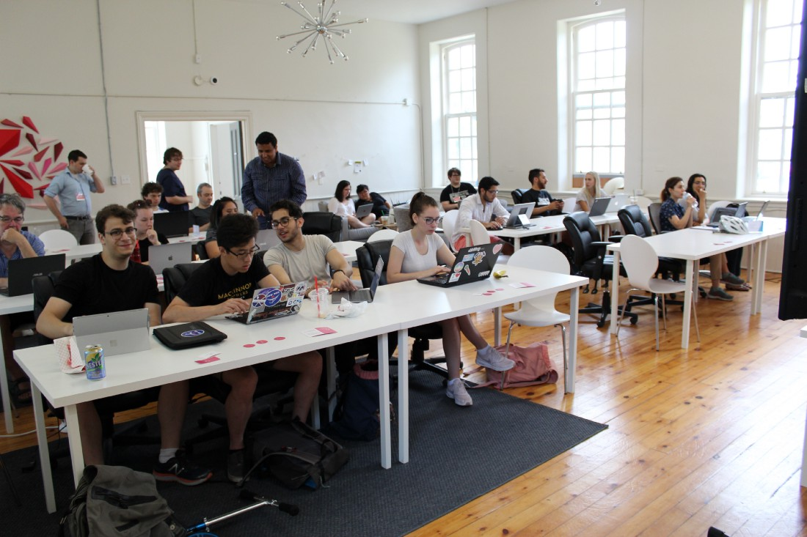

Blog
These blog posts were originally created for Sudo Labs.
by Daisy Barrette

It’s been another busy year at Sudo Labs! We held over 14 events in 2018, including a Kingston Tech networking night, a roleplaying games social, and workshops on exciting new topics like blockchain, machine learning, and ReactJS.
We were fortunate to be able to partner with some really amazing people and organizations this year, too:
- Blockchain for Beginners workshop with Queen’s Blockchain Innovation Community
- Code & Coffee meetup with Queen’s prof Dr. Qingling Duan at KEYS Job Centre
- Create a Web App with ReactJS in partnership with Ratehub
- Binary Solo workshop with Ones + Zeros
November 2018 marked Sudo’s 20th workshop to date! Number 21 is coming up on January 26th, 2019: Intro to Databases. As of right now it’s already full; you can join the waiting list here.
The whole team is excited for the new year! We’ll continue having monthly workshops and special events like Code & Coffee meetups.
Have an idea for an event? Let us know!
by Daisy Barrette

Last year I shared a list of kid-friendly coding tools that I’ve used with younger students in my workshops (and for myself!), but if you’re looking for something a bit more advanced or academic, try out these free sites:
MIT Open Courseware
Now anyone can go to MIT! There’s a wide variety of courses, in every subject you can think of. No need to sign up or meet any deadlines, just learn what you want to at your own pace. Get started here.
W3Schools
The place to go for web dev. They’ve got tutorials and reference pages on HTML, CSS, JavaScript, SQL, PHP, you name it! Plus my favourite part, the hexadecimal colour picker.
Codecademy
I love the interactivity in Codecademy courses. You don’t just passively take notes, you code along during the lesson. And it’s all done in-browser, so you don’t need to download anything.
Free Code Camp
Get started — or stay in shape — with short, fun programming challenges. You can jump around and do the parts you’re interested in, like algorithms and data visualization, or just start at the beginning.
Khan Academy
Khan Academy is more than just math (though they can still help you with that, too). There’s plenty to choose from, including game design and animation!
There’s plenty more out there, too, especially on YouTube. You may even be able to get access to paid sites like Lynda.com through your local library or school.